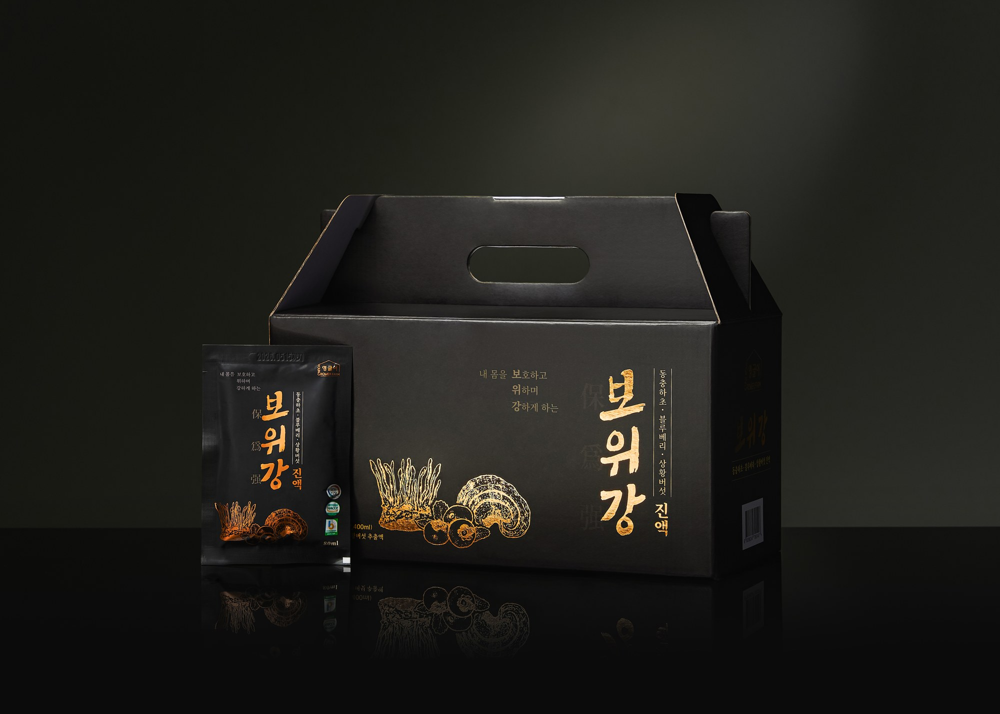
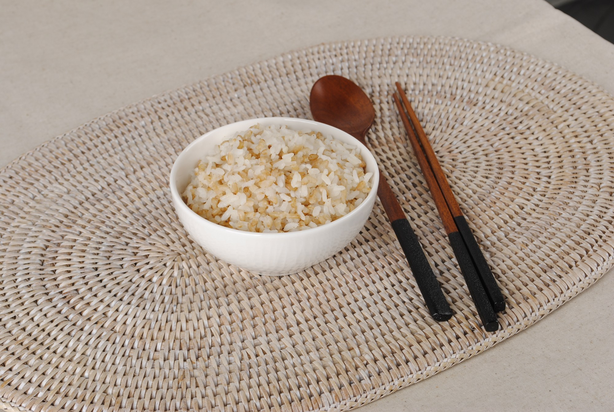

버섯 사업
재배와 발효를
재배와 발효를
일상의 식품으로 연결합니다.
상황버섯, 동충하초와 노루궁뎅이버섯이 버섯 사업의 기반입니다.

재배·가공
버섯 재배에서 버섯쌀로.
화순에 1,504㎡ 규모의 버섯 재배 시설을 운영합니다. 현미 기반 고체배양을 버섯 식품과 소재 개발에 활용합니다.
보위강 버섯쌀, 버섯 진액과 머쉬라이스칩을 선보입니다.
보위강 버섯쌀
제품 개발
다양한 형태의 제품,
다양한 형태의 제품,
하나의 생산 기반.
버섯 제품군은 액상 진액과 쌀 간식으로 이어집니다. 곡물 제품군에는 파로, 호라산밀, 병아리콩을 활용한 제품도 포함됩니다.
현재 제품 규격과 공급 가능한 형태는 담당자와 상담할 수 있습니다.
버섯 제품 살펴보기
연구로의 연결
바이오 연구의 출발점.
버섯 생산은 베타글루칸, 코디세핀과 에리나신 성분 연구의 기반이기도 합니다. 재배, 성분 분석과 식품 소재 개발을 연결합니다.
바이오 연구 살펴보기